The Shadow effects let you simulate light falling on objects from various directions.
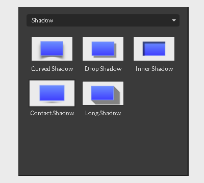
Curved Shadow

The Curved shadow creates a bent shadow effect as if it is cast by the material with pilled corners. For example, a sheet of paper lifting off the desk.
No matter what object you are trying to simulate, you have tons of controls to fine-tune the shadow:
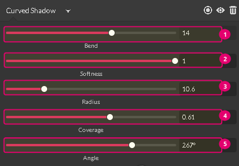
The Bend (1) slider controls how much it would be bent.
The Radius (2) slider sets the distance between an object and the shadow. A high radius value creates an illusion of the object hanging.
The Softness (3) slider controls the blur of the edges.
The Coverage (4) slider controls the distribution of the effect. Low coverage makes the shadow very faint in the middle.
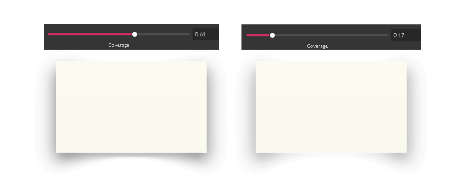
The Angle (5) slider controls the position of the shadow. While dragging, you get the sense of rotating the source of light around the object.
You can control the opacity of the shadow by typing inside the Opacity (1) text box.
You can also choose the color of the effect by clicking the Eyedropper (2) icon to open the Color Picker. You can select solid colors, linear gradient, radial gradient, and angular gradient options.
Drop Shadow
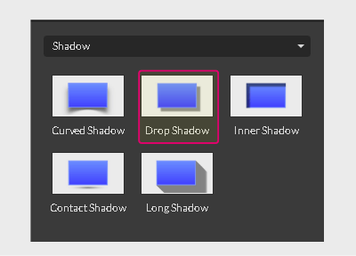
The Drop Shadow effect helps an object appear to rise up above the surface by drawing and offsetting a blurry dark background.
You can control the offset value and amount of blur:
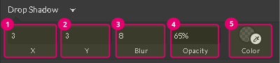
- The value in the X (1) text box moves the shadow horizontally. A positive value moves the shadow to the right; a negative value moves the shadow to the left.
- The value in the Y (2) text box moves the shadow vertically. A positive value pulls it downward, while a negative value pushes it upward.
- The value in the Blur (3) text box controls the spread and smoothness of the shadow. A low blur value makes it appear solid.
- The Opacity (4) text box controls the transparency of the effect.
- You can also click the Eyedropper (5) icon to bring up a Color Picker for choosing the color.
Inner Shadow
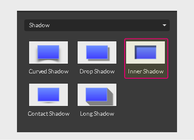
The Inner Shadow effect creates an offset shadow within an object. It simulates the 3D depth of a 2D object, which makes it ideal for letterpress, cut-out, and engraved text effects.
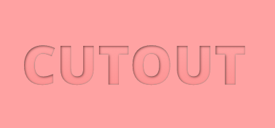
The Inner Shadow effect shares the same interface with the Drop Shadow effect.
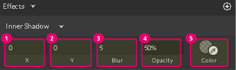
- Use X (1) text box to move the shadow horizontally. A positive value moves the shadow to the right; a negative value moves it to the left.
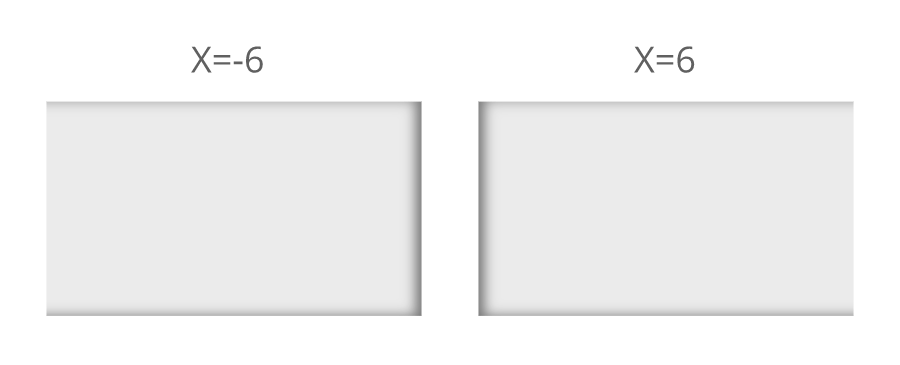 - Use the Y (2) text box to move the shadow vertically. A positive values pull it downward, while a negative value pushes it upward.
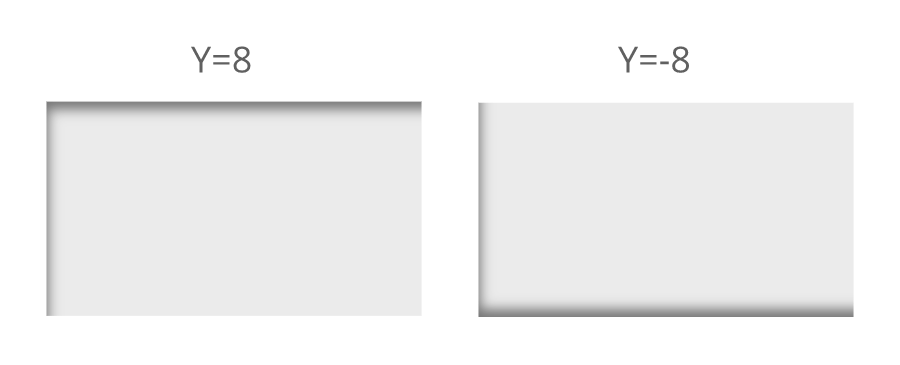 - The Blur (3) text box controls the spread and smoothness of the shadow. A low blur value makes it appear solid.
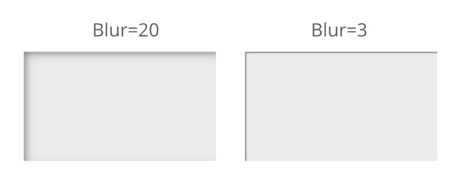 - The Opacity (4) text box controls the transparency of the effect.
- You can also click the Eyedropper (5) icon to bring up a Color Picker for choosing the color.
Contact Shadow
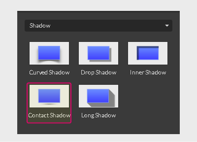
The Contact Shadow effect creates a small elliptical shadow on the horizontal surface.
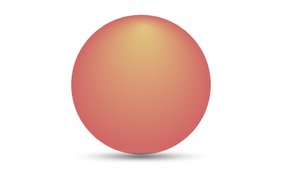
It simulates the shadow cast by the object standing on the horizontal surface or hanging above the ground while the light comes perpendicular to the surface.
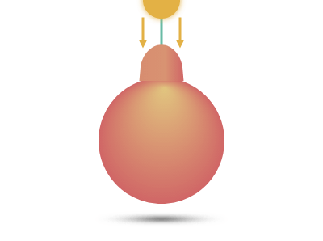
The Contact Shadow effect panel provides plenty of controls to fine-tune the shadow.
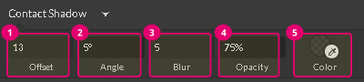
The Offset (1) text box controls the distance between the shadow and the object.
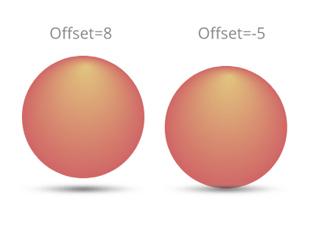
The Angle (2) text box controls the position of the light source and influences the shape of the shadow. Its value varies from 5 to 35, from a narrow ellipse to a near circle.
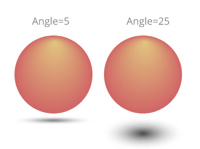
The Blur (3) text box makes the shadow appear fuzzier or smoother.
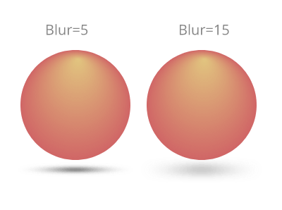
The Opacity (4) text box controls the transparency of the contact shadow.
You can also click the Eyedropper (5) icon to bring up a Color Picker for choosing the color of the shadow. You can select only solid colors for the contact shadow.
Long Shadow
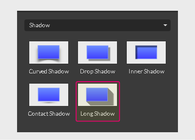
The Long Shadow effect simulates the dramatic long shadow, created by the low sun during sunset or sunrise.
The long shadow is trendy but not new. It has long been employed by professional photographers and film editors to add drama to the scene. In graphic design, it found its way as part of the flat design aesthetics.
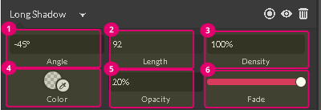
The long shadow by default rests at a 45-degree angle. You can change it by typing inside the Angle (1) text box.
The Length (2) text box controls the length of the effect.
Technically the long shadow is a blend of the duplicates of the object. You can control the number of duplicates involved in the fusion by typing inside the Density (3) text box. High density makes the long shadow very smooth, while low density allows each individual duplicate to be seen.
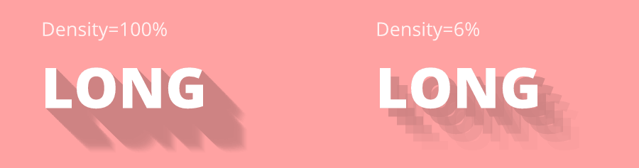
You can click the Eyedropper (4) icon to bring up a Color Picker for choosing the color. Your choice is not restricted by a solid color only. You can also pick up the linear, radial, or angular gradients.
The Opacity (5) text box controls the transparency of the effect.
When the Fade radio slider is on, the long shadow appears faint and blurry at the end, so the fade slider can make the shadow’s tail transparent.
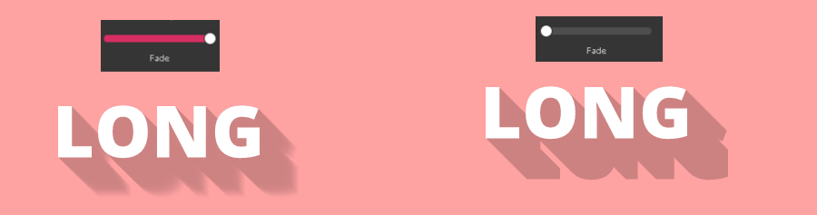